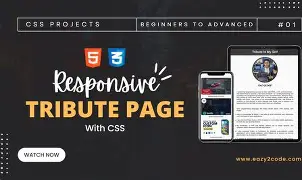
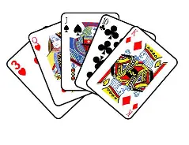

Tribute Page
I built a clean and responsive tribute page that shows my understanding of structure, content layout, and basic styling.
View ProjectProjects
I earned a Responsive Web Design certificate on freeCodeCamp and built these beginner-friendly web projects as part of my learning journey.

I built a clean and responsive tribute page that shows my understanding of structure, content layout, and basic styling.
View Project
This project focused on creating an attractive and responsive webpage for a card-themed website using HTML and CSS.
View ProjectI designed and built a simple blog website for Mr. Whiskey Cat, combining responsive layout and creative presentation.
View Project